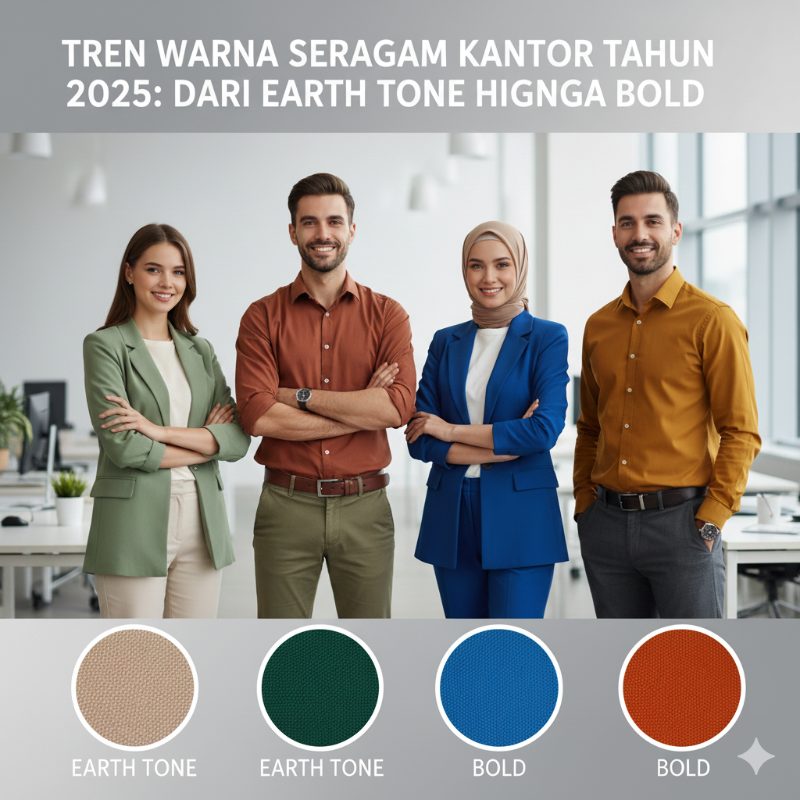

Tren Warna Seragam Kantor Tahun 2025: Dari Earth Tone hingga Bold
Ditulis oleh Tim Konveksi | 15 September 2025

Pertengahan tahun 2025 sudah kita lewati dan saatnya kita menyambut gelombang baru warna-warna yang siap meramaikan dunia fashion! Kalau tahun-tahun sebelumnya dipenuhi warna bold dan ekspresif, 2025 datang membawa kejutan menarik. Perpaduan antara warna-warna lembut yang menenangkan dan sentuhan warna futuristik, dari dusty pastels hingga earth tones.
Penasaran warna-warna apa saja yang hits sepanjang 2025? Yuk, kita bedah satu per satu tren warna tahun 2025 yang siap membuat hidupmu semakin berwarna berikut ini!
1. Butter Yellow
Butter yellow adalah warna kuning lembut seperti mentega yang tampil hangat dan bukan kuning terang yang mencolok, tapi lebih ke arah pastel creamy. Dalam fashion, butter yellow banyak muncul dalam busana musim semi dan musim panas. Desainer menampilkan gaun longgar berbahan katun tipis, blouse oversized, hingga setelan santai dengan siluet minimalis.
Warna ini sangat cocok untuk gaya soft feminin. Butter yellow juga banyak digunakan dalam gaya hijab casual karena tampil adem, natural, dan mudah dipadukan dengan warna netral lainnya seperti putih, tan, atau olive.
2. Olive
Olive adalah salah satu warna yang tidak pernah benar-benar hilang dari tren, tapi tahun ini tampil lebih dominan. Warna hijau zaitun ini cocok untuk gaya militer klasik, outdoor wear, hingga gaya minimalis modern. Di runway 2025, ZALORAns bisa melihat warna olive dalam bentuk utility jacket, celana kargo high waist, hingga dress panjang dengan potongan asimetris. Bahkan banyak brand modest fashion menggunakan warna ini sebagai dasar koleksi karena terlihat kalem, netral, dan modern.
3. Emerald Green
Warna ini menawarkan rasa elegan dalam nuansa earthtone. Warna emerald banyak digunakan untuk dress malam berbahan satin, suit wanita dengan cutting tegas, hingga aksesori seperti heels dan clutch. Warna ini memberi kesan eksklusif. Emerald juga tampil menawan saat dipadukan dengan gold atau cream untuk memberi efek classy vibe yang lembut.
4. Powder Pink
Powder Pink adalah jawaban untuk kamu yang ingin tampil feminin dan manis. Warna ini punya karakter lembut, adem, dan lebih girly. Di tahun ini, powder pink tampil dominan dalam fashion yang clean dan feminin. Warna soft seperti ini cocok untuk tampilan modest wear dan Korean-style outfit. Powder Pink juga sering dipadukan dengan charcoal, tan, atau butter yellow untuk kesan pastel yang hidup dan menyatu.
5. Bold Red
Warna bold red di tahun 2025 menjadi warna statement yang kuat. Dalam fashion, warna bold red sangat banyak digunakan untuk outfit power dressing, seperti jas oversize, mini dress, dan sepatu hak tinggi yang mencuri perhatian. Bold Red juga mendominasi gaya pesta dan evening wear, bahkan hadir dalam gaya streetwear untuk jaket kulit. Warna ini cocok untuk kamu yang ingin tampil mencolok dan eye catchy.
6. Silver
Silver adalah lambang futuristik dalam fashion 2025. Tahun ini, silver tidak lagi terbatas pada gaun malam glamor, tapi merambah ke streetwear, sportswear, dan bahkan daily outfit. Desainer menggunakan bahan metalik untuk crop jacket, celana jogger bertekstur foil, rok plisket, hingga ankle boots. Silver juga kuat di dunia aksesori seperti tas geometris dan kacamata metal. Dipadukan dengan warna hitam, charcoal, atau electric blue, Silver menciptakan gaya yang high-tech dan super edgy.
7. Hitam
Hitam mungkin sudah lama jadi warna andalan. Warna ini tetap jadi lambang kekuatan dan elegansi, tapi bukan berarti tampilannya monoton. Warna hitam juga dipadukan dengan bahan transparan atau metalik untuk menciptakan kontras visual yang unik. Siapa nih yang selalu menjadikan warna hitam sebagai warna andalan dalam mix and match outfit?
8. Dark Burgundy
Dark Burgundy tampil sebagai warna yang lebih deep daripada maroon. Warna burgundy cocok untuk acara formal malam hari atau untuk tampilan elegan. Warna yang satu ini banyak digunakan bersama warna netral seperti ivory, gold, dan hitam untuk tampilan yang mewah dan classy.
Kembali ke Blog